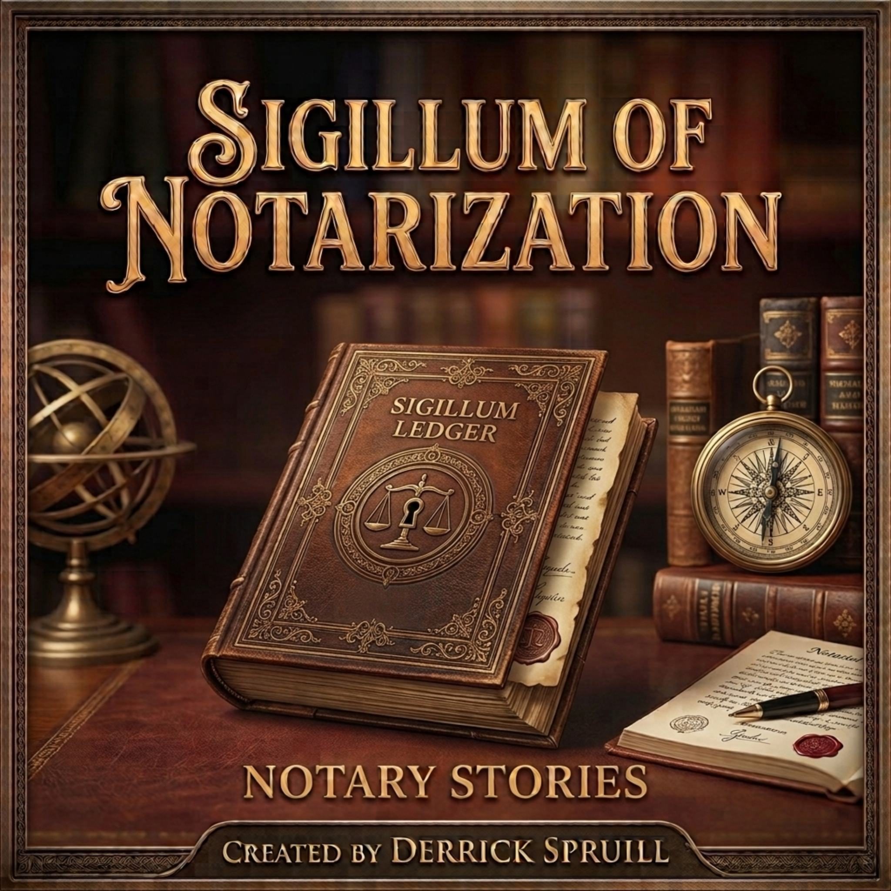

Complete Five-Book Dark-Cinema Audio Drama Vault
Written & Created by Derrick Spruill · Produced by Magnificent Workz & LearnWorkz
Stream both free official trailers and subscribe on Apple Podcasts ($5.99/mo · $59.99/yr) for exclusive subscriber-only access to all 200 full episodes across Books I–V.
Subscribe on Apple Podcasts